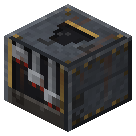
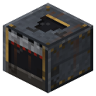
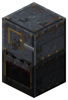
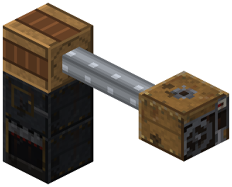
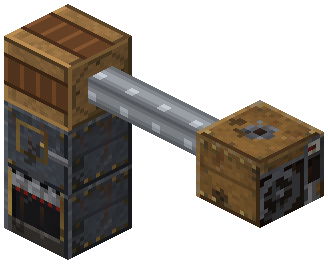
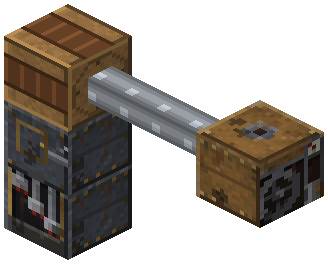

Stamp Mill
Era 2Steam and mechanics

idle

running
Batch of up to 8: ore -> dust (1:1.5), cobble -> gravel, gravel -> sand + clay + flint, redstone ore -> + cinnabar (1 per 4). Needs a Drive Unit on top; the pulley goes next to it.
Parameters
| Era | 2 — Steam and mechanics |
|---|---|
| Multiblock | no |
| Drive | shaft 6 hp |
| What it does | ore -> dust 8:12 (redstone ore — + cinnabar 1 per 4); cobblestone -> gravel |
| Input energy | shaft 6 |
Numbers
| ore stamp mill | 6 hp |
|---|---|
| stamp mill: chalk per limestone block (hammer 2, macerator 3) | 3 pcs |
Fed by
- shaft ← Steam Engine, High-Pressure Steam Engine (transmission)
Feeds
- minecraft:flint → Crucible Furnace
- Chalk → Chemical Reactor, High-Pressure Reactor
- Cinnabar → Brick Retort
Assembly
Clicking the Drive Unit works like clicking the machine. Runs from a shaft only.

Bottom — the mortar with stamps. Goes first.

On top — the Drive Unit (camshaft under a casing). Without it the machine stands still.

The pulley goes right against the Drive Unit (on top or beside), shaft to a steam engine. A pulley at the bottom does nothing.

assembled

running
Faded blocks were placed in earlier steps.